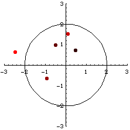

Run away to infinity
| How does a sequence run away to infinity anyway? | ||||||||||||||||||||
| Must we check a very, Very, VERY, VERY long time? | ||||||||||||||||||||
| Here some mathematical reasoning helps with the interpretation. It is not difficult to prove that if some member zj of the sequence is farther than 2 from the origin, then the distance between the origin and later members of the sequence will grow without bound. | ||||||||||||||||||||
| This is what we mean by run away to infinity, and so all we have to check is whether the sequence runs farther away than 2. | ||||||||||||||||||||
|  | ||||||||||||||||||||
| Here are some iterates of zn+1 = zn2 + c for
| ||||||||||||||||||||
| Note that z4 is outside the circle of radius 2, so later zi should run farther away from the origin. A few more iterates will illustrate this. | ||||||||||||||||||||
| ||||||||||||||||||||
| Consequently we call this condition | ||||||||||||||||||||
| some zj is farther than 2 from the origin | ||||||||||||||||||||
| the escape criterion. |
Return to Julia sets.